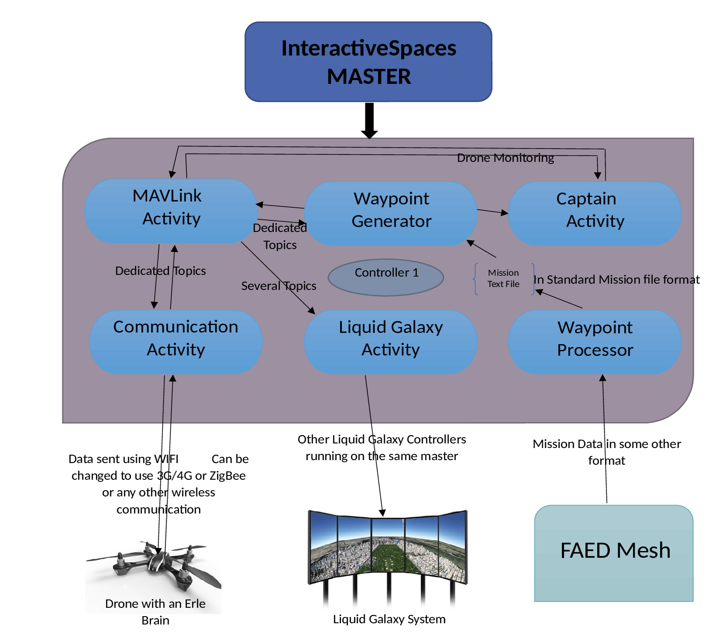

FAED Ground Station
A Drone Ground Control Station based on Interactive Spaces

Welcome to Interactive Spaces based Ground Control Station
This project is a part of FAED Drone Project and is a GSoC 2015 project. This subproject has to maintain a robust communication between a drone and Interactive Spaces activities. It has to make the drone follow a particular path by sending it coordinates to the Way points. It also has to receive data back from the drone so that it can be monitored in real time. For achieving this goal, the following activities have been made. While designing this, the thing of utmost importance was maintaining modularity, robustness and easy understanding.
1. Communications Activity
This is the communication layer of the project. It will receive data to be sent from Mavlink Activity and send it to the drone. Also it will receive data from the drone and it will publish it. Mavlink will process this data and put it on several relevant topics to be used by other activities. Basically this activity has been separated from the main mavlink activity to ensure modularity in the entire project. If we want to have a different means of communication with the drone, we will change this activity to use that method of communication and thats it! We do not need to change anything else. We only have to make sure that the bytes received from the drone is transported successfully to the mavlink activity reliably.
2. Mavlink Activity
This activity will extract the Mavlink payload data from the data received from communications activity (It will subscribe to the communication activity’s publisher). It will then parse the data into various fields and then publish it on several different topics. For example, if it receives IMU data, it will will extract this data and publish on some topic named /IMU, if it receives gps data it will extract this data and put it on some topic like /GPS. This activity will also subscribe to the Way point generator activity and in turn pack the data according to MAVLink’s standards and then publish it on the communication activity’s input channel. Then the communication activity will send it to the drone. This package will be something similar to mavros package.
3. Way point Generator Activity
This will first read the number of Way points from a mission text file and generate a payload data and send it to the Mavlink Activity. Mavlink will then pack this data and send it to the communications activity to be sent to the drone. The drone in return will reply with a request for the Way point data which Mavlink Activity will understand and ask from Way point Generator Activity. Then this activity will read a Way point in the mission text file stored locally and generate payload data from this and send it to the Mavlink Activity. In turn, Mavlink Activity will further pack this payload data as per MAVLink’s norms and send it to the communications activity which in turn will send it to the drone. In response, the drone will send some acknowledgement or ask for some further Way point data which will be understood by Mavlink Activity and then asked from Way point Generator Activity. Way point generator will send the next Way point coordinates and this process will continue until whole of the mission text file is transmitted. Thus Way point generator will transmit the whole mission text file reliably.
4. Way point Processor Activity
This activity will communicate with FAED mesh activity (from another FAED subproject) and then generate a mission text file based on the data it gets. This mission file is prepared in between so that there is a compatibility between our code and Mission Planner / APM Planner or any other Ground Control Station. So if any one prepares a mission file using these planners, they would still be able to use it with this architecture.
5. Liquid Galaxy Activity
This activity will subscribe to all the data received from the Mavlink activity received from the drone (Like GPS , IMU, Battery, compass etc). It will then paint all these data on the liquid galaxy system so that it is easier to visualize everything.
6. Captain Activity
This activity will be a safety activity for the drone. It will decide when to arm the motors and when to disarm then. It will keep a track of the error between the input Way point and the path followed by the drone and if there is too much of an error then it will take some action either to correct or to call off the mission and seek human intervention. It will keep a track of the battery health of the drone and take appropriate actions if necessary. Basically whatever safety precautions, run time actions or any other thing which a human drone pilot would do will be implemented in this activity.

Authors and Contributors
In 2015, Abhay Kumar (@aksonuabhay)
Support or Contact
Having trouble with Pages? Check out the documentation or contact author and we’ll help you sort it out.